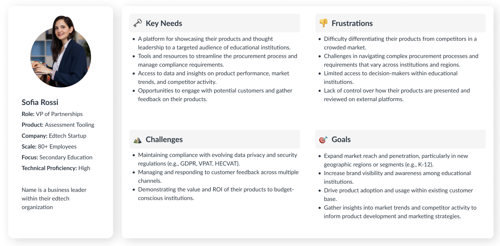
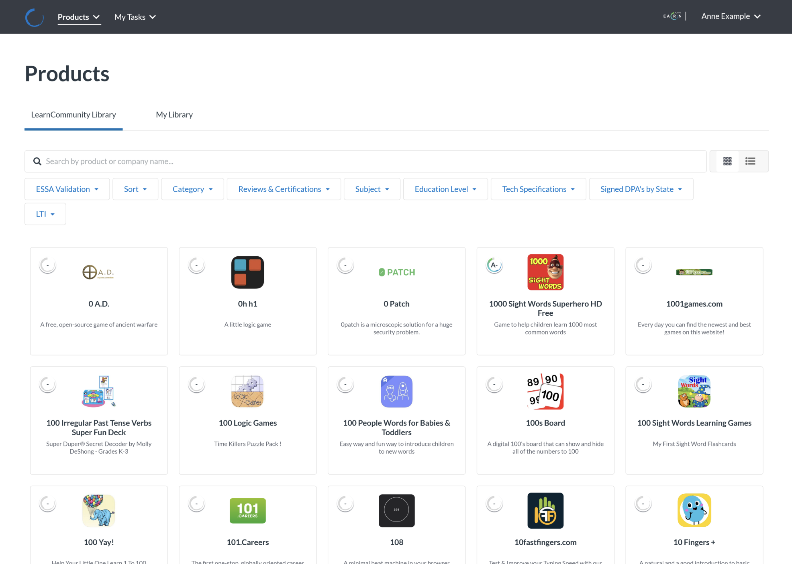
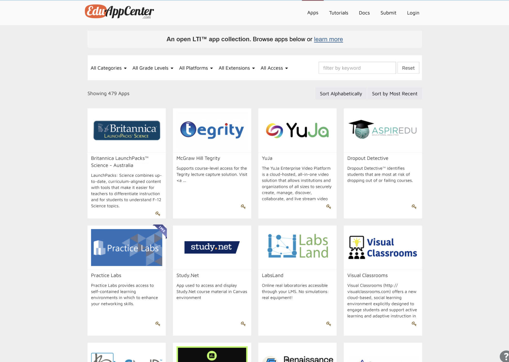
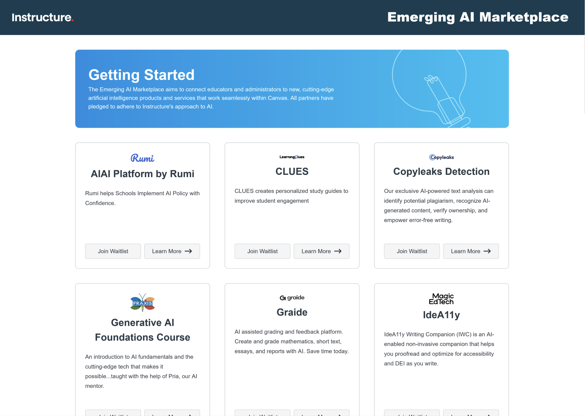
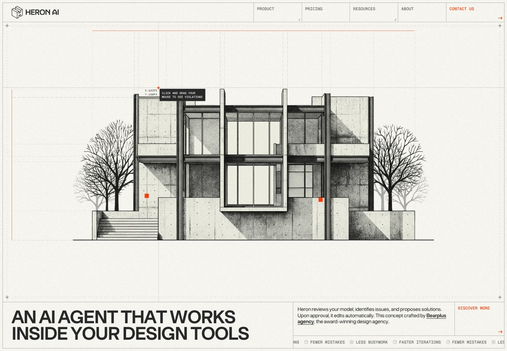
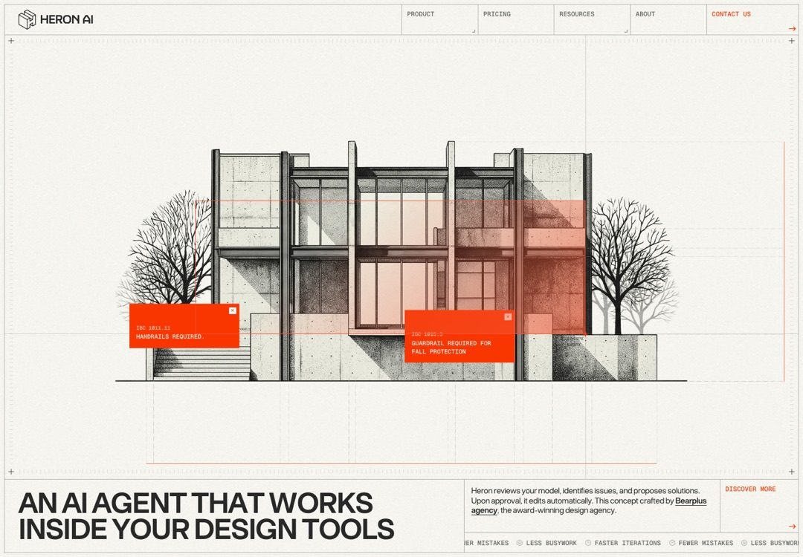
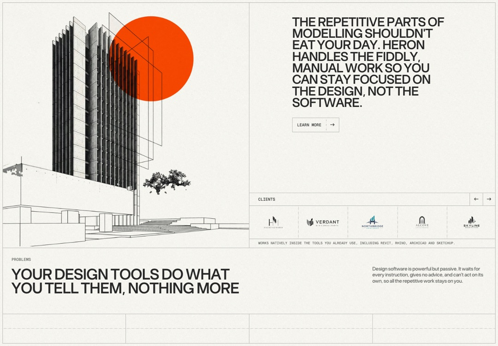
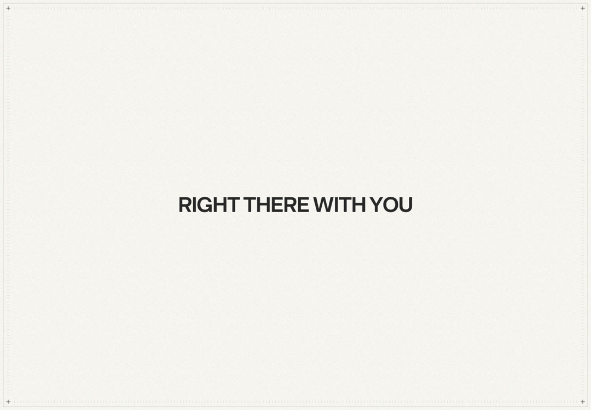
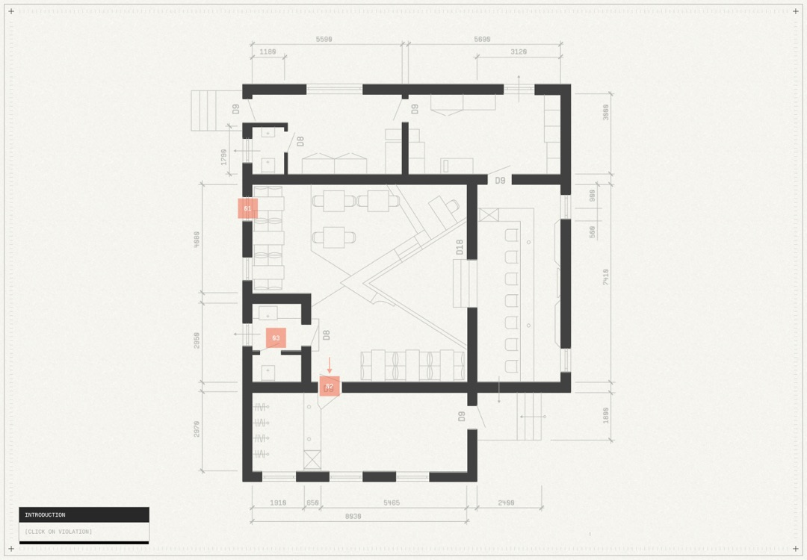
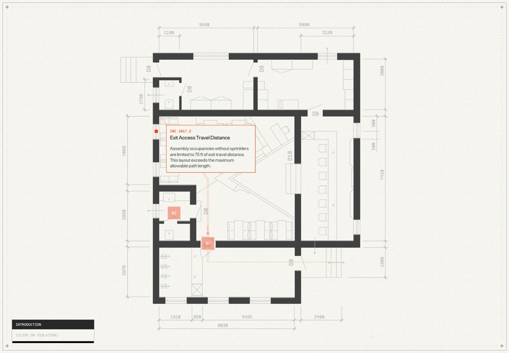

Workstream Index
One shared product, four coordinated responsibilities.
Explore the work through a quiet margin index. One artifact owns the reading field; its relevant scope unfolds beside it.
A shared Marketplace.
- Catalog and publishing
- Research and delivery
- Legacy continuity
- Edu App Center sunset
The margin names scope; it does not pretend to reconstruct individual decisions.
Proposed signature: a registration mark connects scope and evidence.
What earns the interaction
The selected workstream changes both the evidence and its explanation. No duplicated panel grid. A native text link remains available.
Watch for
This becomes ordinary tabs if movement is only cosmetic. Some workstreams have prose evidence, so they must not be assigned invented artifacts.
Select the numbered states to compare the sequence. The original images open at full size.
Registration Proof
Understand the need. Inspect the response.
Keep one inspection frame steady while research, planning, and product evidence take turns within it. Exposed edges invite the next discovery.
Visibility, from the provider's side.

Provider perspective / research synthesisResearchPlanProductOne frame preserves your reading position.
Proposed signature: reveal the next proof from its labeled edge.
What earns the interaction
Pulling or selecting an edge changes the evidence type. The motion explains where the new document came from and how to return.
Watch for
Avoid theatrical paper effects or CCP's map-viewer behavior. Related evidence does not prove that a specific research finding caused a particular product component.
These are original documents, mounted without changing their pixels. The sequence is an editorial proposal.
Catalog Confluence
Three discovery destinations. A shared Marketplace.
Let consolidation become the page's signature. Distinct sources remain recognizable as their frames settle into one shared product boundary.
Discovery began in separate places.

LearnCommunity Library
Edu App Center
Emerging AI MarketplaceThe other sources remain identifiable without competing at equal size.
Proposed signature: sources retain identity as their frames register.
What earns the interaction
Selecting an exposed source brings it forward. Native scrolling reveals the shared boundary. Inspecting the final product opens supporting evidence nearby.
Watch for
Frames can converge; source pixels never merge. Do not animate invented data migration or imply all three catalogs were retired. Only Edu App Center is explicitly documented as sunset.
The movement shown here illustrates state relationships. Continuous scrolling, source selection, and local inspection belong in the next prototype.
Start with Catalog Confluence.
It turns the actual subject into the memorable interaction and gives the opening a clear direction. Review that mechanism first, then prototype the opening, transition, and inspection before extending it across the page.
Read proposed timings, boundaries, and acceptance criteriaWhat to carry forward from Heron
Observed interaction states, not visual templates to copy. Exact timing was not measured. Portfolio's visible graph paper is its own material requirement.
{kind=link}

{kind=link}

{kind=link}

{kind=link}

{kind=link}

{kind=link}
